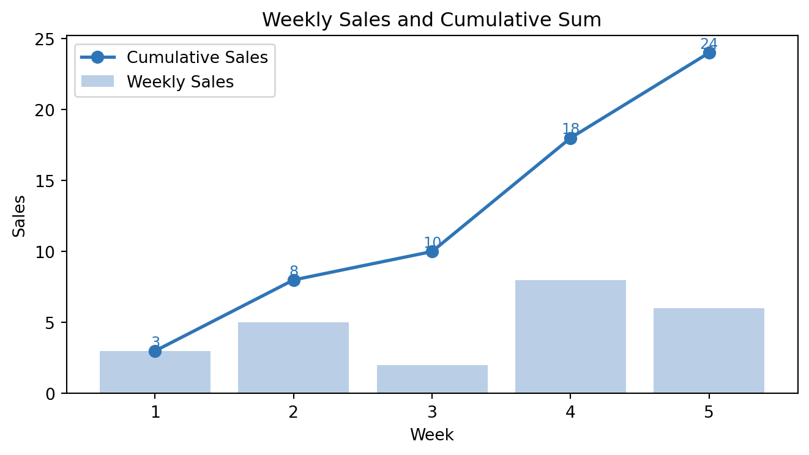

An overview of my Python skills developed through fourth-year modules in data analytics, machine learning, advanced Python and programming and visualisation.
I studied Python across two fourth-year modules at DCU — Data Analytics: Programming and Visualisation and Data Analytics: Machine Learning and Advanced Python. The first covered Python fundamentals, NumPy, pandas, matplotlib and SQL. The second applied machine learning techniques to real datasets using scikit-learn. Below is an overview of the core skills I developed, with live demonstrations of each.
NoteModules
BAA1026 — Data Analytics: Programming and Visualisation — Year 4, Semester 1
BAA1027 — Data Analytics: Machine Learning and Advanced Python — Year 4, Semester 2
1. NumPy
NumPy is the foundation of scientific computing in Python. It provides fast, vectorised operations on arrays and is the basis for almost every data science library.
Core concepts
The key advantage of NumPy over plain Python lists is vectorisation — operations apply to every element without writing a loop, making code both faster and more readable.
Show code
import numpy as np# Array creationarr = np.arange(6).reshape(2, 3)print("Array:\n", arr)print("Shape:", arr.shape)print("Dimensions:", arr.ndim)print("Sum along axis 1:", arr.sum(axis=1))
Array:
[[0 1 2]
[3 4 5]]
Shape: (2, 3)
Dimensions: 2
Sum along axis 1: [ 3 12]
Broadcasting allows NumPy to perform arithmetic on arrays of different shapes without copying data. The smaller array is “broadcast” across the larger one.
If arrays have different numbers of dimensions, the shape of the smaller one is padded with 1s on the left.
Dimensions of size 1 are stretched to match the other array.
If neither dimension is 1 and they don’t match, NumPy raises an error.
2. Pandas
Pandas provides the DataFrame — the core data structure for tabular data analysis in Python. It is the primary tool I used for data cleaning, transformation and aggregation across both modules.
# GroupBy — total revenue by productsummary = df.groupby('Product').agg( Total_Revenue=('Revenue', 'sum'), Avg_Units=('Units', 'mean'), Orders=('Revenue', 'count')).round(2).sort_values('Total_Revenue', ascending=False)summary
Total_Revenue
Avg_Units
Orders
Product
Printer
19478
8.0
9
Laptop
12214
9.0
4
Tablet
11052
8.0
6
Monitor
1043
7.0
1
Show code
# Pivot table — revenue by product and regionpivot = df.pivot_table( values='Revenue', index='Product', columns='Region', aggfunc='sum', fill_value=0)pivot
Region
East
North
South
West
Product
Laptop
0
2793
9421
0
Monitor
0
0
0
1043
Printer
178
5187
6384
7729
Tablet
0
7204
2353
1495
3. Matplotlib & Visualisation
Data visualisation was a core part of the Programming and Visualisation module. The in-class test required plotting cumulative sums and overlaying multiple series on the same chart.
Show code
import matplotlib.pyplot as pltsales = np.array([3, 5, 2, 8, 6])cumulative = np.cumsum(sales)weeks = np.arange(1, len(sales) +1)fig, ax = plt.subplots(figsize=(7, 4))ax.bar(weeks, sales, color='#A9C4E0', label='Weekly Sales', alpha=0.8)ax.plot(weeks, cumulative, color='#2E75B6', marker='o', linewidth=2, markersize=7, label='Cumulative Sales')for i, (s, c) inenumerate(zip(sales, cumulative)): ax.text(weeks[i], c +0.3, str(c), ha='center', fontsize=9, color='#2E75B6')ax.set_xlabel('Week')ax.set_ylabel('Sales')ax.set_title('Weekly Sales and Cumulative Sum')ax.legend()plt.tight_layout()plt.show()

Figure 1: Cumulative sum of sales overlaid with raw sales — as practised in class
Show code
import plotly.express as pxfig = px.bar( df.groupby(['Product', 'Region'])['Revenue'].sum().reset_index(), x='Product', y='Revenue', color='Region', barmode='group', title='Revenue by Product and Region', color_discrete_sequence=px.colors.qualitative.Set2)fig.update_layout(height=400)fig.show()
Figure 2: Interactive revenue breakdown by product and region
4. Machine Learning Pipeline
The ML module built on the programming foundations to apply supervised learning to real datasets. The full pipeline I developed for the brain tumour classification project follows these steps:
flowchart LR
A[Raw MRI Images] --> B[Resize to 128x128]
B --> C[Normalise pixels 0-1]
C --> D[Flatten to vector\n49152 dims]
D --> E[StandardScaler]
E --> F[PCA\n726 components\n95% variance]
F --> G[Train classifiers\nSVM / RF / KNN / NB]
G --> H[VotingClassifier\nSoft voting ensemble]
H --> I[Evaluate\nAccuracy / F1 / Recall]
Dimensionality reduction with PCA
PCA reduces high-dimensional data by finding the directions of maximum variance. The number of components is chosen to retain a target proportion of the total variance:
This is particularly important in medical classification where both false positives (unnecessary treatment) and false negatives (missed diagnosis) carry real consequences.
In the brain tumour project, PCA reduced the feature space from 49,152 dimensions to just 726 components — a 98.5% reduction — while retaining 95% of the explained variance. This made KNN and SVM computationally feasible on a standard laptop.↩︎